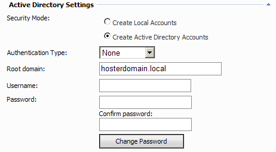
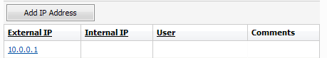
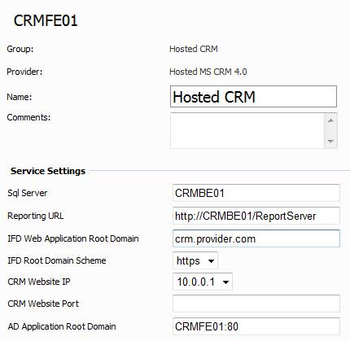
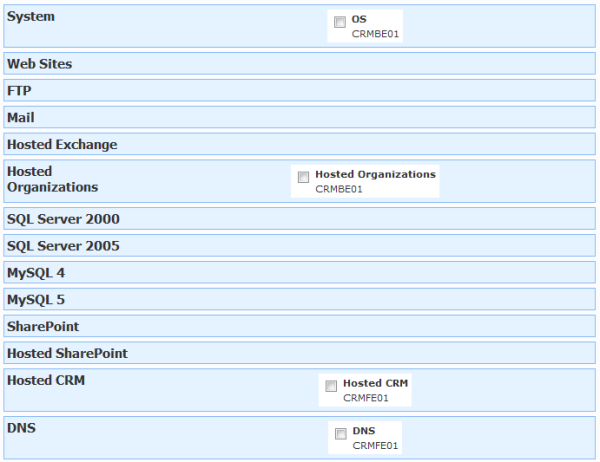
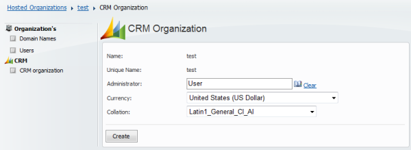

WSP Hosted CRM Solution Installation Tasks
Translations:
WSP Server account requirements
WSP Server account for WSP Server Web site anonymous access and WSP Server application pool identity must be the domain account. Add this account to PrivUserGroup created by CRM setup and to local Administrators group on SQL server. In case this account is already added to Domain Admins group (for example for Hosted Organizations) - there is no need to add it to local Administrators group on SQL server.
Setting up "Active Directory Settings"
Requirements for "Active Directory Settings" for all WSP Servers where Hosted CRM module will be deployed are the same as for WSP Server where Hosted Organizations module will be deployed.

Setting up Hosted CRM Service
Add External IP to server. It should be public IP address of AppServer that hosts CRM Web Site. If NAT-based infrastructure is used, add external IP of NAT server on which CRM Web Site will be published. This will be used for creating DNS records for client's CRM Sites. Please add this address even you are not going to manage DNS with WSP.

Ensure that "OS" service is deployed at least on one WSP server. If you are going to create Virtual Server and Hosting plan mixed with classic Web hosting - add "OS" service from WSP Server that will host websites. In case of pure CRM or mixed WSS/Exchange/CRM environment - use any server. Your customers may use their Hosting Space folders for WSS Site collection's backup. Also future Exchange mailbox backup and CRM organizations backup features will use Hosting Space folders too. So choose "Hosting Spaces Folder" path carefully (it should have enough free space, for example - point to physical disk where data files, not programs are located).
Ensure that "Hosted Organizations" module is deployed on one of the WSP Servers.
On "Hosted CRM " service specify service settings (most of them can be taken from CRM setup XML file used for CRM deployment previously):
SQL Server. CRM SQL back-end server host name. Can be copied from "SqlServer" tag from setup XML file.
Reporting URL. CRM SQL back-end server Reporting Services URL. Can be copied from "Reporting URL" tag from setup XML file.
IFD Web Application Root Domain. Can be copied from "webapplicationrootdomain" tag from setup XML file. Or you can run IFD Deployment Tool and copy it from there.
IFD Root Domain Scheme. Can be copied from "rootdomainscheme" tag from setup XML file. HTTPS is strongly recommended. Or you can run IFD Deployment Tool and copy it from there.
CRM Website IP. Select server IP from drop-down. It should be External IP address of AppServer that host CRM Web Site external clients will connect to.
CRM Website port. Fill this field only in case you use non standard (not 80 or 443) ports for HTTP or HTTPS for CRM Web Site.
AD Application Root Domain. Run IFD Deployment tool and copy “AD App Root Domain”
Note that “AD Domain Scheme” must be set to HTTP, not HTTPS in IFD settings, otherwise WSP CRM user management may not work. This will not affect security because it will not be opened to outside in correct IFD deployment.

Creating Virtual Server
It is strongly recommended to use Virtual Servers, but not Servers for Hosting plans. This greatly increases flexibility and helps you avoid problems during adding services or resources to existing customers
Select "Hosted CRM" server as target server.
Select "Hosted Organizations" service from server where you deployed it.
Select "OS" service from any server. If you are going to create Virtual Server and Hosting plan mixed with classic Web hosting - use "OS" service only from Web server.
Optionally select"Exchange 2007" services from Exchange 2007 server with Mailbox role in case (more likely) you are going to use Hosted CRM and Exchange in one Hosting Plan or add Exchange features to customers later with Add-Ons.
Optionally select other services like "Hosted SharePoint" or "Web" if you are going to use Hosted CRM and other services in one Hosting Plan or add other services to customers later with Add-Ons.
Optionally select "DNS" service from appropriate server if you use WSP-managed DNS server.This service is optional

Creating Hosting Plan
In case you are creating mixed CRM/Exchange Hosting Plan, create plan according to this document and then add "Hosted CRM" option.
In case you are creating pure CRM Hosting Plan, create plan according to this document, just do not add "Exchange 2007" option and add "Hosted CRM" option.
Creating CRM Organization
Here we assume that the following steps have been already done after creating Hosting Plan:
- WSP User created by hosting provider
- Hosting Space (based on previously created Hosting Plan) for this WSP User is created by hosting provider
- Hosted Organization inside this Hosting Space is created by hosting provider or by hosting customer
- At least one user (future CRM Organization administrator) is created in Hosted Organization by hosting provider or by hosting customer
Here are steps hosting customers have to do to create CRM Organization:
- Go to Hosted Organizations > Customer's organization > CRM > CRM organization
- Choose Administrator for CRM organization from existing organization's users list
- Choose appropriate Currency and Collation
- Press "Create" button.

- Try to open CRM Organization portal in browser. Use administrator's primary e-mail (UPN) as username.